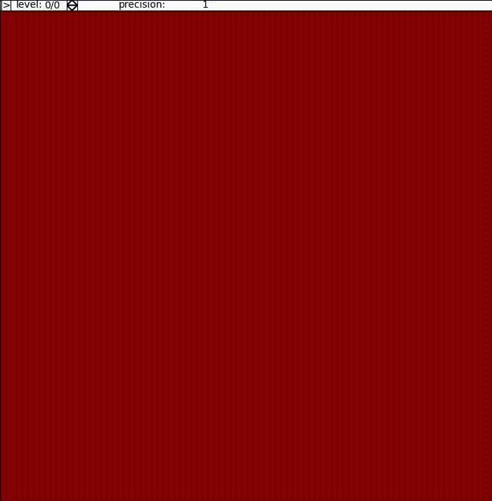

IPYDEMO.fractals — Fractals exploration
This module provides tools to display and explore fractals.
An example
We want to explore the (most famous) fractal: Mandelbrot’s set. It is the set of complex numbers \(c\) for which the following sequence remains bounded:
This is achieved by the following program.
# File: demo/fractals.py
# Contributors: Jean-Marc Andreoli
# Language: python
# Purpose: Illustration of the fractals subpackage
from make import RUN; RUN(__name__,__file__,2)
#--------------------------------------------------------------------------------------------------
import subprocess
from numpy import square
from ..fractals import MultiZoomFractal, FractalBrowser
mandelbrot = MultiZoomFractal((lambda z,c: square(z)+c),ibounds=((-.779,-.774),(.133,.138)),eoracle=2.)
def demo():
from matplotlib.pyplot import show,close
R = FractalBrowser(mandelbrot,fig_kw=dict(figsize=(7,7)),resolution=160000,interval=40,save_count=150)
def action():
for a in 'get_size_inches','set_size_inches','savefig': setattr(R.player.board,a,getattr(R.player.main,a)) # very ugly trick because board is a subfigure
R.player.anim.save(str(RUN.dir/'fractals.mp4'))
subprocess.run(['ffmpeg','-loglevel','panic','-y','-i',str(RUN.dir/'fractals.mp4'),str(RUN.dir/'fractals.gif')])
close()
RUN.play(action)
show()
Typical output:

Available types and functions
- class IPYDEMO.fractals.core.Fractal(main, eoracle=None)[source]
Bases:
object- Parameters:
main (Callable[[complex], complex]) – a function (see below)
eoracle (Union[float, Callable[[float], bool]]) – escape oracle of the sequence defining this fractal object
An instance of this class represents an abstract fractal, defined by a function \(u:\mathbb{C}\times\mathbb{C}\mapsto\mathbb{C}\) as the set of complex numbers \(c\) such that the sequence
\[\begin{equation*} z_0(c)=c \hspace{1cm} z_{n+1}(c)=u(z_n(c),c) \end{equation*}\]remains bounded.
An escape oracle for the fractal is a boolean function \(R\) such that if \(R(z_n(c))\) is true for some \(n\), then the whole sequence \((z_n(c))_{n\in\mathbb{N}}\) is unbounded and \(c\) does not belong to the fractal.
- Parameters:
main (Callable[[complex], complex]) – function \(u\) implemented as a ufunc
eoracle (Union[float, Callable[[float], bool]]) – escape oracle of the fractal (if given as a number r, then it is taken to be the function (lambda z: abs(z)>r))
- generate(grid)[source]
Successively yields the “temperature” grid \(\theta_n(c)\) taken on all the points \(c\) in the grid for \(n=1\ldots\infty\), where
\[\begin{equation*} \theta_n(c) = \frac{\min\{m<n\;|\; R(z_m(c))\}\cup\{n\}}{n} \end{equation*}\]In other words, the temperature \(\theta_n(c)\) of a point \(c\) is the proportion of times in the sequence \((z_m(c))_{m=0:n-1}\) when the value was outside the escape zone.
A temperature of \(1\) characterises a point whose membership of this fractal is not decided yet (it has never been seen in the escape zone until now, but could escape later).
A temperature below \(1\) characterises a point which is provably out of this fractal, and the value of the temperature reflects the effort (number of iterations) that was required to reach that decision.
Note that when \(n\rightarrow\infty\), the temperature \(\theta_n(c)\) tends to \(1\) if \(c\) belongs to this fractal, and \(0\) otherwise.
- Parameters:
grid – an array of complex numbers
- class IPYDEMO.fractals.core.MultiZoomFractal(*a, ibounds=None, **ka)[source]
Bases:
FractalAn instance of this class is a fractal together with a stack of rectangles of the complex plane, where each rectangle in the stack entirely contains its successor. For each rectangle in the stack, a grid with a certain resolution is created and the iterable of corresponding temperature grids is computed.
- Parameters:
ibounds (Tuple[Tuple[float, float], Tuple[float, float]]) – a recommended rectangle of interest, in the form as a pair of pairs (x-min,x-max),(y-min,y-max)
- Entry
alias of
StackEntry
- class IPYDEMO.fractals.core.FractalBrowser(content, **ka)[source]
Bases:
object- Parameters:
content (MultiZoomFractal) – the fractal to browse
An instance of this class is a fractal browser, which allows zooming at controlled resolution.
- player: Any
An object managing the user control (selected automatically based on the
matplotlibbackend, but can be changed)
- class IPYDEMO.fractals.util.player_base(display, **ka)[source]
Bases:
objectAn instance of this class controls the exploration of a fractal.
- Parameters:
display (Callable[[int, Any], None]) – a function which, given a zoom level and possibly its new specification, displays it on the board
- setrunning(b=None)[source]
Sets the running state of the animation to b (if
None, the inverse of current running state).- Parameters:
b (bool)
- show_running(b)[source]
Shows the current running state as b. This implementation raises an error.
- Parameters:
b (bool)
- class IPYDEMO.fractals.util.widget_player(**kwargs)[source]
Bases:
app,player_baseThis class refines
player_basefor backends which supportipywidgets.- Parameters:
displayer (Callable[[Figure, Selection], Callable[[int, Any], None]]) – passed the board figure as well as the selector on that board, returns the display argument of the superclass
resolution (int) – the (constant) resolution for all the zoom level (total number of pixels to display)
toolbar (HBox)
- class IPYDEMO.fractals.util.mpl_player(displayer, resolution=None, fig_kw={}, tbsize=((0.15, 0.8, 0.15, 1.4), 0.15), **ka)[source]
Bases:
player_baseThis class refines
player_basefor backends which do not supportipywidgets.- Parameters:
displayer (Callable[[Figure, Selection], Callable[[int, Any], None]]) – passed the board figure as well as the selector on that board, returns the display argument of the superclass
resolution (int) – the (constant) resolution for all the zoom level (total number of pixels to display)